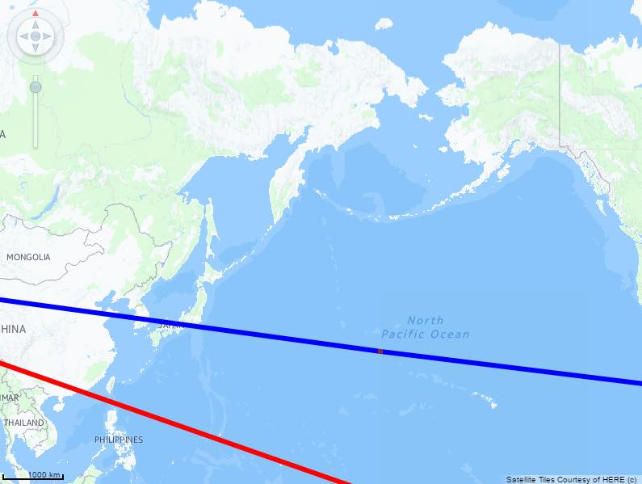
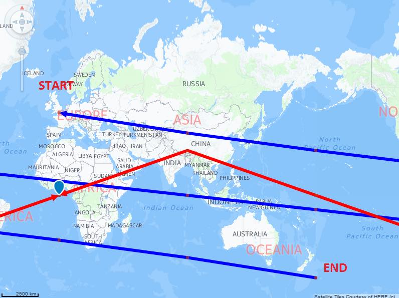
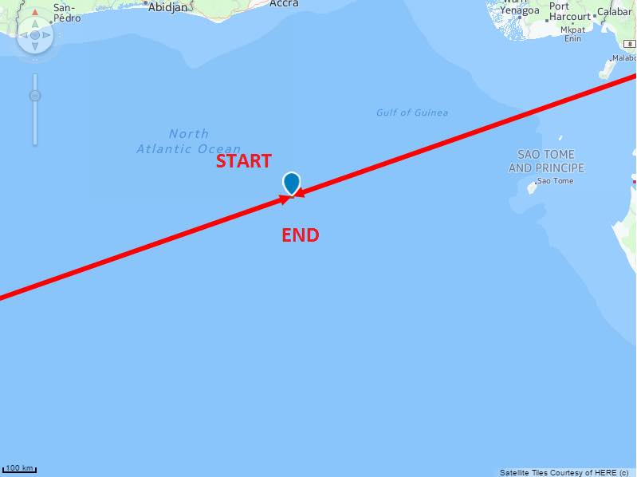

Visual Business UI5: Rendering a World Route.
The aim:
To test the "around the world capabilities" for routes.
To test:
- Zoom out of the map, and make sure that you can see two routes - one red route, and one blue route.

- Check that the blue route's start position is different from its end position. You should be able to see the head and tail of the route.

- Check that the red route's start position is the same as its end position.
You should notice that this route is endless because the starting point and ending point are the same.
